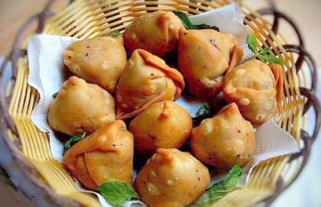

Singara - সিংগাড়া

A Singara is a fried South Asian pastry with a savoury filling, including ingredients such as spiced potatoes, onions, peas.
Ingredients
Steps
- To make the dough, mix salt and water together and dissolve the salt. Then mix flour, oil and the salty water together and make smooth but a little bit hard dough.
- Heat the frying pan and pour the oil in the pan. Add the cumin seeds and when it crackles, add onion.
- Heat the frying pan with the oil for deep fry. When oil is ready, place the singaras in the pan few at a time. Don’t make the pan crowded. Keep space in the pan for the singaras to float around.
Back to Index